Ресерч WAY
Пʼятнадцять продуктів у трьох групах, вимір спільної болі на пʼятьох еталонах поза категорією, обраний патерн взаємодії та гіпотеза на кожну прогалину. Плюс два доресерчі: після персон і після структури продукту.
Конкуренти
Розподіл по групах — наша оцінка, не чиясь класифікація. Критерій потрапляння — не популярність, а те, чи закриває продукт відкрите питання.
complice.co віддає 301 на intend.do — Complice перейменовано на Intend.Група ХАРД
Максимально близькі за ідеєю підходу: змінюють кут бачення й відчуття від ведення проєкту. Та сама аудиторія.
| Sunsama | Motion | Intend | Superlist | Amie | |
|---|---|---|---|---|---|
| Аудиторія | Знаннєві працівники, засновники | Операційні менеджери й засновники | Розчаровані в класичних системах; окремо — люди з executive dysfunction | Професіонали й родини | Команди зі зустрічами: GTM, customer success |
| Основа | День між ранковим плануванням і вечірнім shutdown | Календар. Беклог є, людина його не бачить | Ціль первинна, задача похідна | Список, доведений до краси | Зустріч |
| Механізм | Ритуал: «що реально влізе сьогодні» → ввечері «що вийшло» | ШІ розставляє задачі по слотах, перебудовує при змінах | Цикли рефлексії: день → тиждень → місяць → квартал → рік | Швидкість введення, голос у задачу | ШІ-аналіз зустрічі + дії в календарі й пошті |
| Довіра | Інтеграції з наявними інструментами; тріал без картки | Обіцянка ШІ. Критикують за плутану ціну | Чотири публічні принципи; соло-засновник, історія з 2012–13 | Імена творців Wunderlist | Відгуки GTM-команд |
| Монетизація | $20/міс річно, $25/міс помісячно | $19/міс річно → $49/міс помісячно | $10/міс річно, $12/міс помісячно, коучинг $200/міс | $0 → $5 → $21 за особу/міс | дані не підтверджені ціни на сторінці не вказані |
Джерела. Sunsama: dhruvirzala, The Business Dive · Motion: Ellie, The Business Dive · Intend: intend.do, pricing, Complice is now Intend · Superlist: pricing · Amie: pricing
$23 000 MRR, соло-засновник, бутстрап (superframeworks). Кількість користувачів — дані не підтверджені. При D18 це найрелевантніший бенчмарк розміру бізнесу з усіх пʼятнадцяти — наша оцінка.



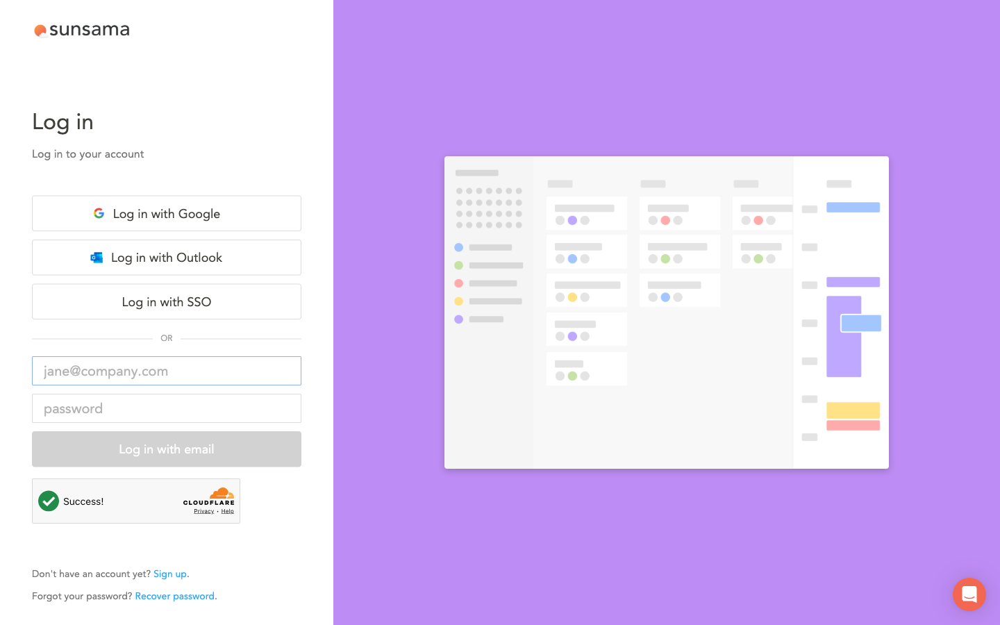



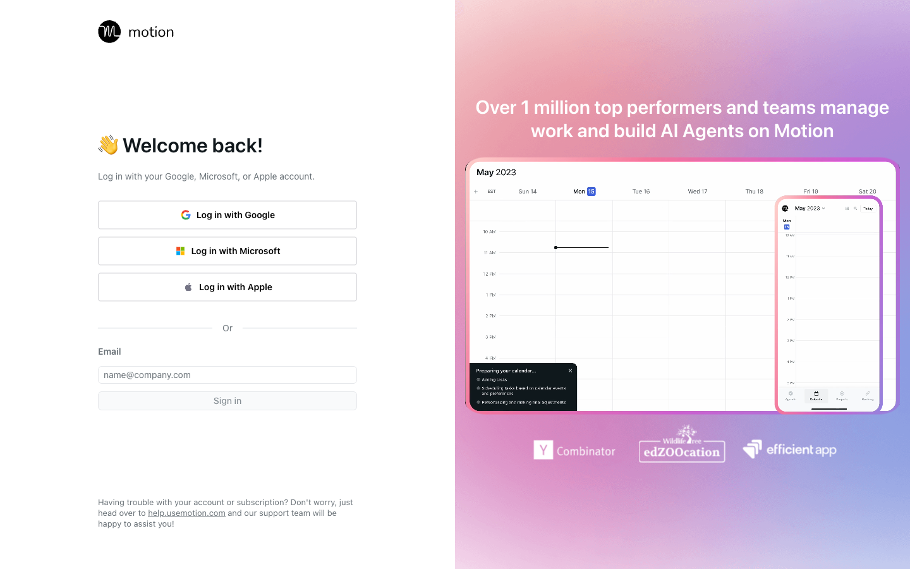

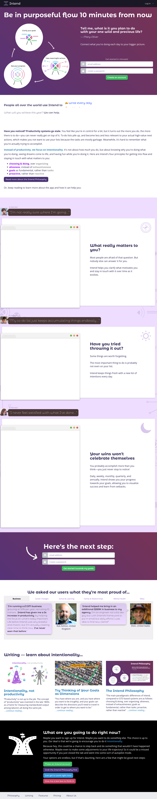

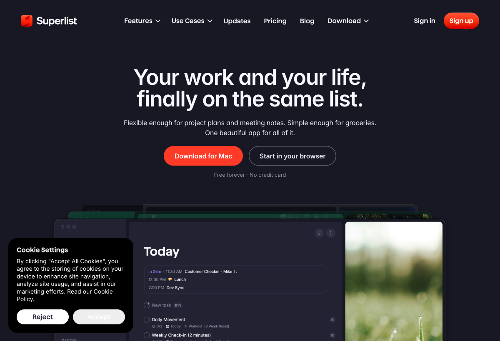

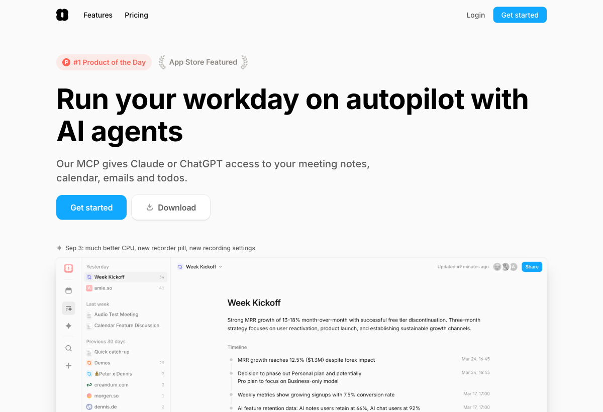
Група СОФТ
Інший продукт, та сама базова задача: вести щось довге з фокусом на прогрес.
| Duolingo | Beeminder | Strava | Oura | GitHub | |
|---|---|---|---|---|---|
| Аудиторія | Масовий самоучка | Self-quantification; ті, кого мотивують фінансові наслідки | Бігуни, велосипедисти | Ті, хто відстежує сон і відновлення | Розробники — та сама аудиторія, що наша ІТ-частина |
| Основа | Лінійний шлях замість дерева навичок; один активний вузол | Графік-дорога, на яку нанесено твою фактичну траєкторію | Активність як обʼєкт: маршрут зберігається | Денна оцінка стану | Накопичена історія: рік як сітка квадратиків |
| Механізм | Послідовність вирішує за тебе; стрік як паливо | Зійшов із лінії — списують гроші | Сегменти, рекорди, соціальне визнання | Продукт радить узяти день відпочинку | День = квадратик; залишок не показується ніколи |
| Довіра | Масштаб і публічні дослідження ефективності | Власна теорія слабкості волі, радикальна прозорість | Спільнота | Залізо, клінічні партнерства | Стандарт індустрії |
| Монетизація | Freemium; ціна Super — не підтверджено | Гроші беруть за провал, не за доступ | Для України $4.99/міс або $29.99/рік | дані не підтверджені | $0 → $4 → $21 за особу/міс |
Джерела. Duolingo: blog.duolingo.com, duoplanet · Beeminder: beeminder.com · Strava: pricing · Oura: ouraring.com · GitHub: pricing

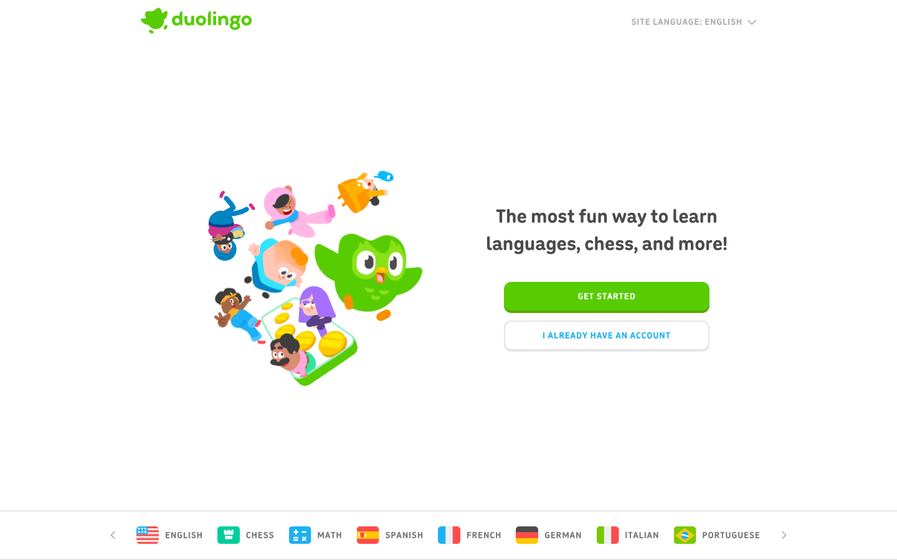

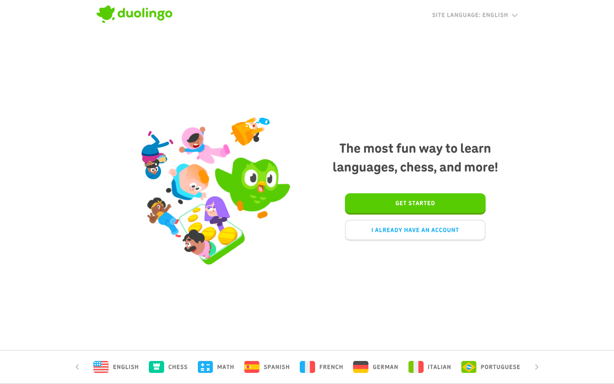

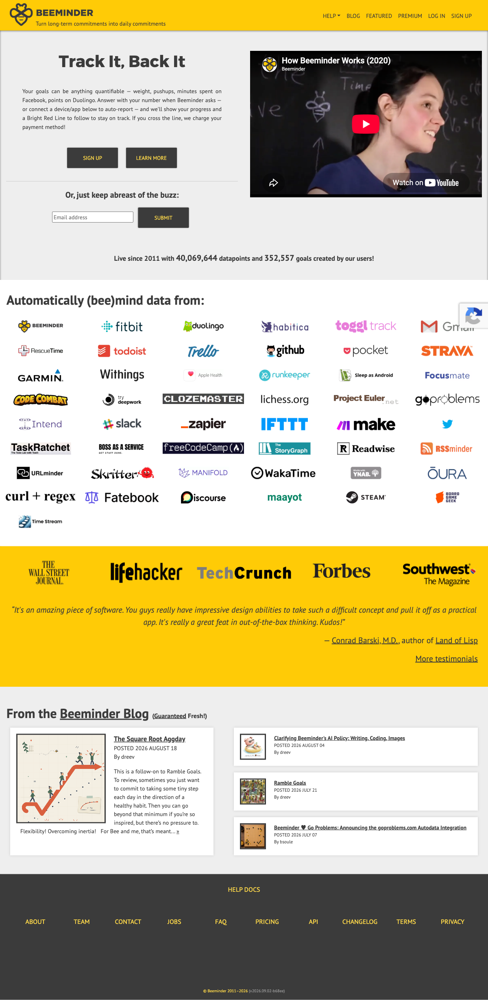

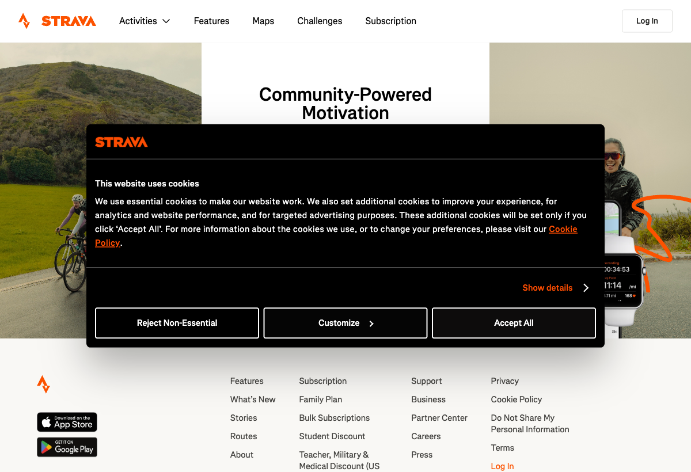


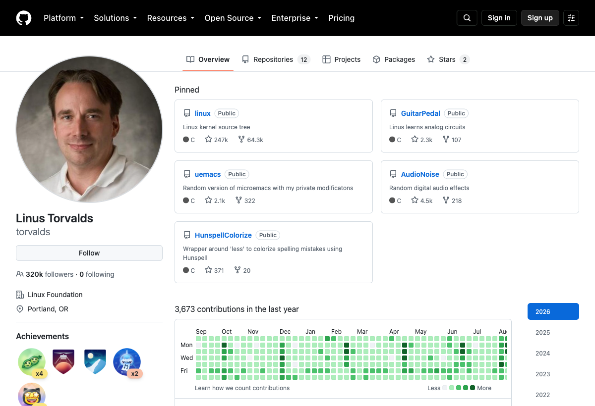

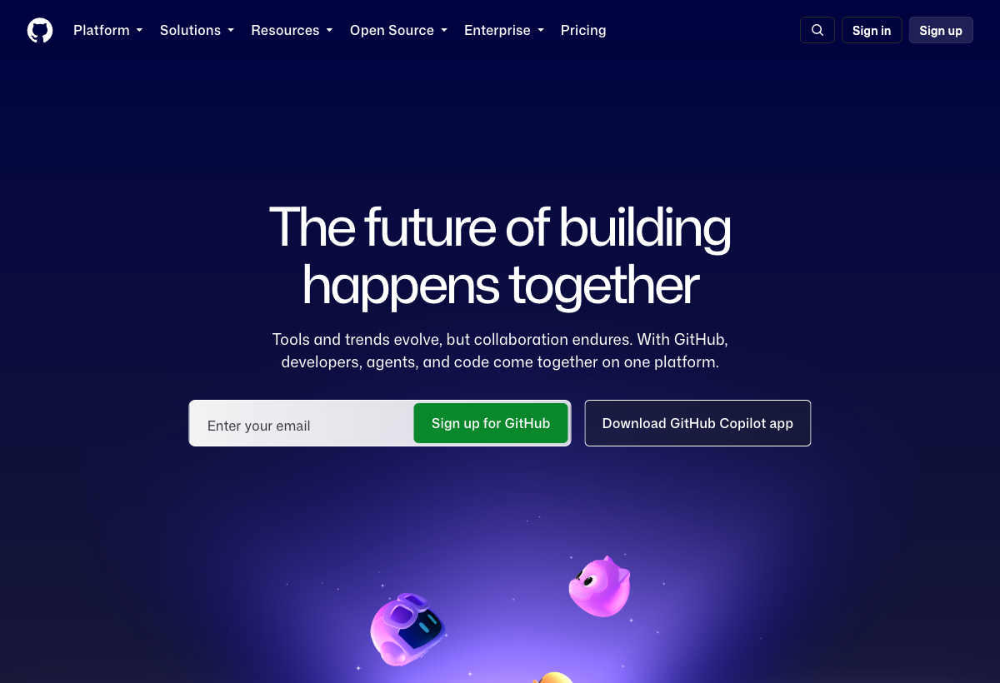
Група АСПІРАЦІЙНІ
Міжнародні еталони в категорії ведення проєктів.
| Things | Linear | Basecamp | Asana | Notion | |
|---|---|---|---|---|---|
| Аудиторія | Індивідуал в Apple-екосистемі | Продуктові й інженерні команди | Малі студії та агенції | Компанії з портфелем робіт і цілей | Усі — і це проблема наша оцінка |
| Основа | Список, доведений до ремесла. «Today» як єдиний екран рішення | Цикли: робота живе в періоді, не в беклозі | Проєкт як набір скоупів, не задач; Hill Chart поверх них | Портфель, цілі, звітність | Конструктор блоків |
| Механізм | Швидкість введення, відсутність зайвого; рішення за людиною | Momentum замість накопичення беклогу | Дві фази: вгору (зʼясовуємо) → вниз (виконуємо) | Automations, Goals, Portfolios | Гнучкість: будь-яка структура можлива, жодна не запропонована |
| Довіра | Незалежна студія зі Штутгарта, Apple Design Award 2017, один продукт за історію | The Linear Method — публічна методологія | 25 років, Shape Up і Rework, відмова від per-user цін | Масштаб і сертифікації | Екосистема шаблонів |
| Монетизація | Разова покупка: iPhone $9.99. Mac та iPad — не підтверджено | $0 → $10 → $16 за особу/міс | Фікс без per-user: $0 → $25 → $59 → $99 → $299/міс | $0 (до 2 осіб) → $10.99 → $24.99 | $0 → $10 → $20 за особу/міс |
Джерела. Things: App Store, Productive with Chris · Linear: method, pricing · Basecamp: Shape Up ch.13, hill-charts, pricing · Asana: pricing · Notion: pricing

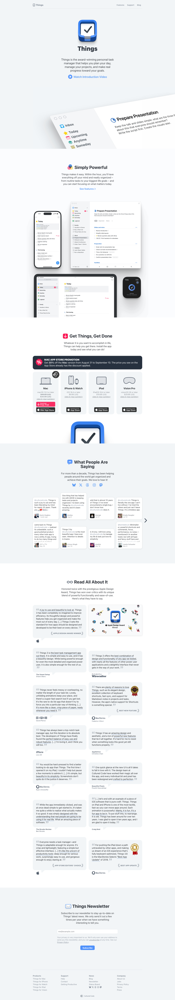

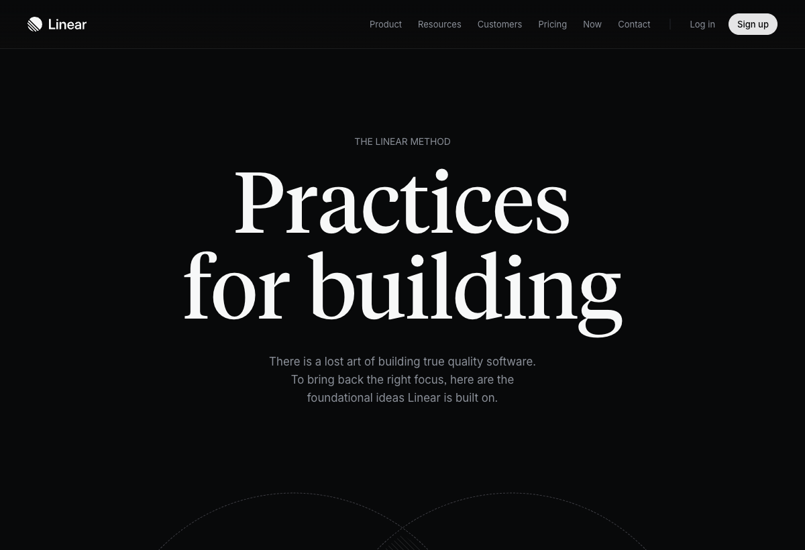

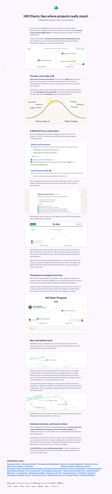



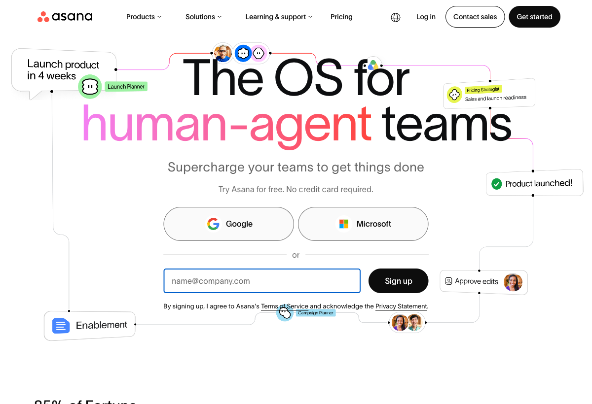

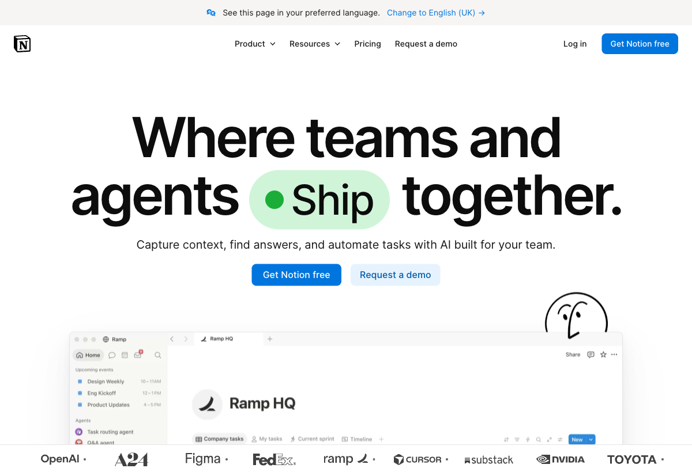
Три спільні патерни ринку
Категорія рухається від «покажи все» до «покажи одне»
Things звузив до екрана «Today». Sunsama — до дня, зібраного вручну. Motion — до слота в календарі. Duolingo — до одного активного вузла: редизайн мотивували тим, що люди питали, «чи правильно вони користуються продуктом», і компанія дала «чіткий шлях, яким можна йти» (blog.duolingo.com). Basecamp — до однієї точки на скоуп.
наша оцінка «Крок дня» не є нашим диференціатором — це те, до чого категорія прийшла незалежно з пʼяти боків.
Прогрес показують агрегацією; сотні одиниць не показує ніхто
Basecamp формулює прямо: списки задач зростають у міру просування, а hill chart показує скоупи, а не задачі, бо інакше картинка бреше (Shape Up ch.13). Duolingo згортає уроки в секції.
Довіра будується декларованою думкою, а не набором фіч
The Linear Method, Shape Up у Basecamp, чотири принципи Intend, ритуал Sunsama. Продукт на методології — норма категорії.
наша оцінка Наш спосіб виходу на ринок стандартний для категорії, і його зрозуміють.
Три відмінності
Хто обирає наступний крок — і чим за це платять
Пʼять відповідей: людина (Things, Basecamp, Notion) · система (Motion) · послідовність контенту (Duolingo) · ритуал-діалог (Sunsama, Intend) · фінансова ставка (Beeminder).
Ціна автоматизації задокументована з обох боків: користувачі Duolingo пишуть, що новий формат ставиться до дорослих «як до школяра» й забрав автономію (duoplanet); Motion критикують за «агресивну автономність» (Ellie). Протилежний полюс має іншу ціну — не провал, а масштаб: Intend із вибором у центрі має $23K MRR при одному засновнику.
Що є одиницею прогресу
Задача (Things) · невизначеність скоупу (Basecamp) · урок (Duolingo) · день (Sunsama) · слот (Motion) · квадратик дня (GitHub). Basecamp окремо: єдиний, хто вимірює прогрес зменшенням невідомого, а не кількістю зробленого.
Монетизація не корелює з якістю досвіду
Things — Apple Design Award 2017 і єдиний без підписки взагалі, разова покупка. Motion — найдорожчий у вибірці й найбільш критикований саме за ціну.
Бенчмарк
Вимір: наскільки продукт перетворює зусилля у відчуття позиції.
Чому це вимір. Біль має арифметичну природу, і Basecamp її назвав: списки задач зростають у міру просування. Обмежене денне зусилля проти необмеженої множини читається як нуль. Отже критерій провалу з брифу — «не дає відчуття хоча б мікрориху» — недосяжний у списковій формі за побудовою, а не через поганий дизайн. наша оцінка на основі цитованого механізму.
Вісім критеріїв
| # | Критерій | 1 бал | 5 балів | Привʼязка |
|---|---|---|---|---|
| К1 | Слід пройденого існує і не зникає | Зроблене зникає одразу | Накопичується на головному екрані | §1, D12 |
| К2 | Головне питання екрана — «де я», не «скільки лишилось» | Головна цифра — борг | Позиція первинна | Aha 2 |
| К3 | Ціна фіксації руху | Треба заповнити форму | Один жест або автоматично | D18 |
| К4 | Наступний крок очевидний | Обирати з великого набору | Один крок, готовий до дії | Aha 1, D31 |
| К5 | Простір попереду заповнений | Порожньо або нескінченно | Закрите, але відчутне | O15 |
| К6 | Поведінка після паузи | Докоряє, обнуляє | Мʼяко повертає найменшою дією | D28 |
| К7 | Читабельність на масштабі | Розсипається на десятках | Тримається на сотнях | O17 |
| К8 | Слід переживає зміну цілі | Історія втрачена | Лишається й перевикористовується | D12 |
Пʼять еталонів
| Продукт | Що робить найкраще | Джерела |
|---|---|---|
| Hevy трекер тренувань | Поруч із кожним підходом — колонка Previous: що ти робив минулого разу, з автопідстановкою в поле. Але вагу не призначає сам — показує історію, рішення лишає за людиною. Автоматика винесена в опційний Trainer | RepReturn · Push/Pull · Pocket-Fit |
| Headspace медитація | Мʼяка мова про пропущений день: пропуск як відновлюване, не як провал. Власна стаття — «твій run streak це не про число». Водночас критикують за скидання статистики на День 1 | Headspace · Trophy · Maximized |
| Death Stranding доставка вантажів | Карту можна нахилити, щоб прочитати крутизну рельєфу; маршрут прокладає сам гравець, ставлячи мітки й зʼєднуючи їх лінією. Побудована дорога лишається у світі | 505 Games · Shacknews · PC Gamer · Cordite |
| Kindle читалка | Показує, скільки лишилось до кінця розділу, рахуючи з фактичної швидкості читання людини | Good e-Reader · MakeUseOf |
| Apple Fitness кільця активності | День як обʼєкт, що замикається; історія сіткою. Джерело антипатерну — нижче | Macworld · Michigan Daily · Cora |

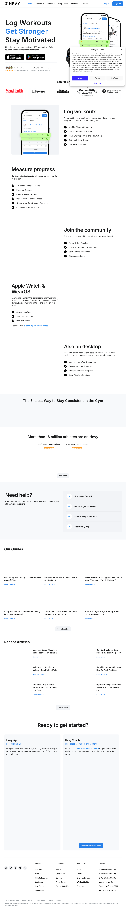

Оцінки пʼятьох еталонів
| Продукт | К1 слід | К2 позиція | К3 ціна | К4 крок | К5 попереду | К6 пауза | К7 масштаб | К8 переживає | Σ |
|---|---|---|---|---|---|---|---|---|---|
| Death Stranding | 5 | 5 | 4 | 3 | 4 | 4 | 4 | 5 | 34 |
| Hevy | 5 | 5 | 3 | 5 | 2 | 4 | 4 | 5 | 33 |
| Kindle | 3 | 5 | 5 | 5 | 4 | 2 | 5 | 1 | 30 |
| Headspace | 4 | 3 | 5 | 5 | 3 | 4 | 3 | 3 | 30 |
| Apple Fitness | 5 | 3 | 5 | 4 | 2 | 1 | 3 | 2 | 25 |
Профіль важливіший за суму. Hevy високий майже скрізь і провалюється рівно там, де ризикуємо ми: К3 — усе вводиться руками, К5 — попереду нічого не намальовано. Kindle і Headspace мають однакову суму й протилежні профілі. Apple Fitness — єдиний із одиницею в К6, і це рівно та механіка, яку в нас просять.
Три механізми для MVP
Рельєф замість інструкцій
закриває O15Що це. У Death Stranding попереду не порожнеча й не розмічений маршрут — там місцевість, яку треба прочитати. Карта нахиляється, щоб побачити крутизну схилів; мітки ставить сам гравець і сам зʼєднує їх у лінію (505 Games, Shacknews).
Чому нам. Відповідь на питання, що показувати попереду, коли дороги наперед не існує: рельєф є, вказівок немає. Не суперечить D31 — система показує місцевість, розмічає її людина.
Застереження. Сліди інших гравців до нас не переносяться: v1 персоніфікований (D5).
Локальний горизонт замість глобального залишку
Що це. Kindle показує відстань до кінця розділу, а не книжки, і рахує з фактичної швидкості читання людини. Призначення описано прямо: щоб легше було вирішити, чи є час ще на один шматок, чи час зупинитися (Good e-Reader).
Чому нам. Прямий контрзахід проти арифметики болі: розділ — обмежена множина, книжка — ні. Для нас: відстань до кінця етапу, ніколи — до кінця дороги. Найдешевша реалізація з трьох при D18 — наша оцінка.
Наступний крок виводиться з власної історії і пропонується, не призначається
D31 · O12Що це. Hevy кладе поруч із порожнім полем те, що ти зробив минулого разу, і зупиняється. Рішення про наступний крок — твоє; автоматичне програмування винесене в опцію, яку треба ввімкнути свідомо (RepReturn, Push/Pull).
Чому це найважливіший механізм добірки. Це буквально D31, реалізований у працюючому продукті. І він працює виключно на даних, які людина ввела сама — рівно наше обмеження за O12, без жодних інтеграцій.
Один механізм, який не спрацює
Кільця активності: обовʼязкове щоденне замикання
Чому спокусливо. D13 дозволяє гейміфікацію й стріки; кільце — найвідоміша її форма й дає максимум за критерієм «слід пройденого».
Чому зламається. Пункти 1–3 — наша оцінка, пункт 4 задокументовано.
- У нас немає сенсора. Apple вимірює автоматично. У нас фіксує людина руками — тож незамкнене кільце означає не лише «не зробив», а й «не відзвітував». Подвійний сором за той самий день.
- Творча й ІТ-робота не має гарантованого щоденного виходу. Дослідження, узгодження, очікування чужої відповіді — рух є, кільце порожнє. Механіка каратиме саме за другорядні дороги з методології.
- Кільце бінарне, а D28 вимагає мʼякості. «Замкнене або ні» не має середини, а вся поведінка після паузи побудована на середині.
- Ціна задокументована. Критики радять зміщувати акцент із денних стріків на тижневу консистентність, бо вона «реалістичніша й менш винувата»; користувачі описують вправи о 22:00 заради стріка як «маніпуляцію, що вдає із себе дизайн» (Macworld, Cora, Michigan Daily).
Що дає Headspace. Полагоджену версію тієї самої механіки: після пропуску мова пропонує шлях назад, а не фіксацію провалу (Headspace). І там же видно межу — навіть Headspace критикують, коли він усе-таки скидає лічильник на День 1. Тобто мʼяка мова не рятує, якщо механіка під нею жорстка.
Твердження, що мʼяка обробка пропуску піднімає повернення з приблизно третини до майже трьох чвертей, походить із блогу постачальника гейміфікації (Trophy), не з незалежного дослідження — дані не підтверджені.
Правило з розділу: захищати користувача, а не метрику. Плюс порада критиків кілець — одиниця сталості має бути тиждень, а не день.
Патерни
Обраний патерн: «Слід і провідник»
Денний цикл із трьох тактів поверх тижневого такту.
Позиція
Продукт відкривається не списком і не порожнім полем, а місцем, де людина стоїть: пройдений відрізок позаду, закрита поверхня попереду, до кінця поточного етапу — конкретна обмежена відстань.
Узгодження
Продукт пропонує один наступний крок або мікрокрок і питає, чи він. Людина підтверджує, замінює або відкладає. Рішення за нею — D31.
Слід
Крок почато — пунктир; завершено — суцільна лінія (D25). Дорога подовжується. Це і є фіксація руху, ціною в один жест.
Тижневий такт. Раз на тиждень — вибір доріг у зоні уваги. Тиждень — одиниця сталості, день — одиниця руху.
Чому саме він під наш контекст
| Аргумент | Обґрунтування |
|---|---|
| Метафора як механіка | Дорога, слід, закрита поверхня, обрій — елементи інтерфейсу, а не оздоблення. Інакше порушується критерій провалу з брифу |
| Не потрапляє в зону втрати автономії | Продукт пропонує, людина вирішує — D31. Обидва продукти вибірки, які пішли далі, дістали одну й ту саму претензію |
| Знімає арифметику болі | Горизонт — етап, не дорога (М2). Множина стає обмеженою без брехні |
| Здійсненно однією людиною | При М2 на екрані одночасно живе один етап, а не двісті кроків. наша оцінка; оцінки в людино-днях — не підтверджено |
| Потребує тих даних, які людина й так уводить | Позиція виводиться з відмічених кроків і щотижневого вибору. AI-шар додається пізніше — розділ 05 |
| Спирається на ритуал замовника | Крок дня плюс щотижневий вибір фокусних проєктів — його ручна практика з блокнота, перенесена в продукт |
Що відкидаємо
| Патерн | Чому |
|---|---|
| Автоматичний розклад (Motion) | Суперечить D31; задокументована ціна — втрата автономії |
| Дошка або список як основний режим | Критерій провалу з брифу. Допустимі лише як альтернативний режим — D27 |
| Обовʼязкове щоденне замикання | Розділ 02 |
| Наперед розмічений маршрут із вказівками | Потребує світу, який існує до приходу людини. У проєктній роботі дорога не існує до того, як нею пішли; попереду може бути рельєф, але не інструкції — наша оцінка |
Висновки
Для кожної прогалини — гіпотеза й розділ, з якого вона випливає. Гіпотези не є рішеннями: вони йдуть у concept/ на перевірку.
| Прогалина | Гіпотеза | Звідки випливає |
|---|---|---|
| O15 Чим заповнене місце попереду | Попереду не порожнеча й не розмічений маршрут, а рельєф, який треба прочитати: місцевість видно, вказівок немає, мітки ставить людина | Бенчмарк, М1 — Death Stranding |
| O17 Граф на 200 кроках | Верхній рівень графа — етапи, не кроки. Кроки живуть усередині етапу й видимі лише в ньому | Конкуренти, П2 — Basecamp: скоупи, не задачі; «нескінченна змія» Duolingo |
| O18 Чи є день обʼєктом системи | День — одиниця руху, має підсумок і власний стан. Але одиниця сталості — тиждень | Бенчмарк, порада критиків кілець |
| O14 Скільки доріг у зоні уваги | Обмеження діє не на кількість доріг, а на кількість у зоні уваги тижня. Фокус вимірюється періодом | Конкуренти, цикли Linear + ритуал замовника. Оптимальне число — не підтверджено |
| O16 Щоб список не став основним | Список доступний лише як перевірка: режим читання без можливості працювати в ньому | Патерни. Прямих даних немає — дані не підтверджені |
| O12 Джерело сигналу про позицію | Ритуал рефлексії первинний, AI вторинний. Продукт показує власну історію людини й зупиняється, як Hevy | Конкуренти + Бенчмарк М3. Відкладено — розділ 05 |
| O13 Як наповнювати ресурси | Ресурси наповнюються побічно — із записів прогулянок і кроків, а не окремою роботою | дані не підтверджені жоден із пʼятнадцяти не має аналога цієї секції |
| O9-b Що беремо з Things | Швидкість введення й дисципліну «нічого зайвого», не форму списку | Конкуренти, аспіраційна група |
| O7 Нейминг, домен, ТМ | Гіпотези немає — це не ресерчеве питання | Домен і ТМ не перевірялися — не підтверджено |
Відкладене й непокрите
R1 · Джерело сигналу про позицію — ритуал і AI
Відкладено 2026-09-04 · питання O12 · не блокує перехід у concept/
Повноваження розподілені (D31): продукт рекомендує або узгоджує, вибір за людиною. Лишилося визначити, звідки він знає позицію. Робочий напрям — ритуал рефлексії плюс AI; висновок із патерну відмічених кроків лишається допоміжним уточнювачем.
Ритуал. Фрактальна система Intend день → тиждень → місяць → квартал → рік: як влаштований синтез рівнів і що питають на кожному. Sunsama: формулювання питань, довжина ритуалу, поведінка при пропуску. Головний ризик — churn ритуалів рефлексії; кількісних даних по ньому немає — дані не підтверджені.
AI. Що можна вивести з мінімальних даних: секція ресурсів (D23), записи прогулянок (D24), історія кроків. Як формулювати рекомендацію, щоб вона лишалась пропозицією — межа D31. Вартість при D18.
Окремо перевірити: чи можна перших користувачів провести взагалі без AI, самим ритуалом — щоб не будувати найдорожчу частину до того, як стане ясно, чи вона потрібна.
Що не досліджувалось
| Прогалина | Причина |
|---|---|
| Інтервʼю з користувачами | Рішення D19. Єдиний носій проблеми — сам замовник; ризик n = 1 лишається непокритим |
| Продуктові інтерʼєри за логіном | Sunsama, Motion, Duolingo — доступу немає, скріни логін-стін позначено DOSTUP-OBMEZHENO. Superlist, Amie, Intend, Beeminder, Linear, Asana, Notion — оцінка за маркетинговими матеріалами. Things вебверсії не має взагалі |
| Кількісні дані ринку | Обсяг, частки, retention не збиралися — дані не підтверджені |
Доресерч після персон
Дата: 2026-09-25 · Питання: чи показує хтось у категорії рух до цілі людині, яка працює сама, і чим цей показ відрізняється від частки закритих задач · Звідки: перевірка персон і JTBD, питання 1 (audit.md) · Метод: точковий — довідки й блоги продуктів, публічні роадмапи, відгуки користувачів, UX-розбори. Скрінів не знімали: кожен факт має посилання на джерело.
Категорія — таск-менеджери й планувальники з розділу 1. Перевірено чотири продукти, на які вказувала перевірка: Things, Intend, Sunsama, Motion.
6.1 Відповідь
Так, показують. Частку закритих задач рахує лише Things. Решта міряють інше: Intend — накопичену увагу до кожної цілі, Sunsama — час на цілі тижня, Motion — прогноз, чи встигне проєкт. У прочитаних джерелах жоден із чотирьох не показує рух просторово, як дорогу.
| Продукт | Що показує | Одиниця руху | Горизонт | Для кого |
|---|---|---|---|---|
| Things | Кругова діаграма біля проєкту заповнюється з кожною відміченою задачею. Окремо є Logbook — архів виконаного з точною датою | частка закритих задач проєкту | проєкт | одна людина |
| Intend | Таблиця «цілі × дні»: які цілі дістають увагу, а які ігноруються. Статистика: активні дні, серія, тренди. Огляди: тиждень → місяць → квартал | накопичені дії, прив'язані до цілі | від дня до року | одна людина |
| Sunsama | Прогрес до цілей тижня й графік часу на них проти решти | час | тиждень, можна продовжувати | одна людина |
| Motion | Етапи й задачі проєкту, згенеровані ШІ з опису, і прогноз, чи встигне проєкт до дедлайну | прогноз до завершення | проєкт | команди |
Чим це відрізняється від частки закритих задач — наша оцінка на основі 6.2–6.5:
- Частка (Things) залежить від знаменника, а він росте й буває неповним. Цю ваду описує Basecamp (
:66), а тепер і людина, яка користується Things (6.2). - Накопичення (Intend) обходиться без знаменника: рух — це скільки дій пішло в кожну ціль і коли. Цілі там — напрямки, а не пункти призначення (6.3).
- Час (Sunsama) показує зусилля, а не просування, і лише в межах тижня (6.4).
- Прогноз (Motion) дивиться вперед, на залишок до дедлайну, а не назад, на пройдене (6.5).
6.2 Things: частка, якій не довіряють
- Як рахує. Кругова діаграма біля проєкту заповнюється, коли відмічаєш задачі, аж до завершення проєкту (Marius Masalar, 2017-05-18). Діаграми видно й на нашому скріні
things--marketing--spokiy-i-today.png. - UX-розбір людини, яка користується Things. Діаграма бреше, якщо не всі кроки проєкту записано в Things: проєкт виглядає майже завершеним, хоча ще двадцять дій записано деінде. Повна діаграма означає не «готово», а «немає наступної дії». Спершу діаграми подобались, а тепер незрозуміло, навіщо вони (According to Andrea, 2019-10-29).
- Перша реакція. На форумі GTD у 2017 році діаграми згадали серед вдалих доповнень, без подробиць (GTD Forums, 2017-05-19).
- Пройдене окремо від частки. Logbook — архів виконаного; з версії 3.5 там видно точну дату завершення (Cultured Code, 2018). Окремого об'єкта «ціль» у Things немає: на скріні в бічній панелі лише списки, області й проєкти.
- Обіцянка й механіка. На головній Things обіцяє допомогти рухатися до цілей (скрін
things--marketing--spokiy-i-today.png). Механіка під цією обіцянкою — частка закритих задач у проєкті.
6.3 Intend: рух до цілі без знаменника
- Кожна дія прив'язана до цілі. Намір на день пишуть із номером цілі; дію поза цілями позначають окремим знаком (інструкція Intend).
- Що видно. Таблиця на сторінці таймлайну показує, «which goals are getting ignored» і які отримують багато уваги (рядки), а також які дні були найсильнішими (стовпці). Сторінка статистики — кількість результатів, активні дні, поточна серія й тренди. Огляди — тижневий, місячний, квартальний (intend.do/features).
- Філософія. Цілі — напрямки, в яких рухаєшся, а не місця, куди треба дійти. За статтею, це допомагає тим, хто боїться провалу (Intend, стаття часів Complice). З усієї категорії це найближча до WAY думка — наша оцінка.
- Голос користувача. У гостьовому огляді після шести місяців із Complice (нині Intend) сказано, що вдавалося стабільно просуватися по кожній із кількох цілей без відчуття перевантаження. Мінус — слабкий зв'язок між цілями й оглядами (LifeDev, 2018-02-15). Це один огляд, тож чи досвід типовий — дані не підтверджені.
- Межа. Інтерфейс за логіном ми не бачили; усе вище — зі сторінки функцій, інструкції, статті й одного огляду.
6.4 Sunsama: час на тиждень і визнаний пробіл
- Цілі тижня. Задачу можна прив'язати до цілі тижня. У тижневому огляді видно прогрес до цілей і графік часу на них проти решти. Ціль можна продовжити на наступний тиждень. Sunsama радить не робити з цілей окремі задачі й не заводити їх забагато (довідка: цілі тижня, довідка: тижневий огляд).
- Компанія визнає пробіл. У травні 2025 року в блозі Sunsama постановку цілей у продукті назвали «myopic»: у ній лише прив'язка задачі до цілі тижня. Анонсували Objectives 2.0: по кожній цілі має бути видно всю роботу за попередні дні, тижні й місяці (блог Sunsama, 2025-05-06). Чи Objectives 2.0 вийшли — дані не підтверджені: у changelog їх не знайшли.
- Попит. На публічному роадмапі запит «річні цілі з прив'язкою задач» набрав 1,2 тис. голосів і відкритий із 2019-12-16. У коментарях пишуть, що прив'язувати заплановану роботу до річних цілей — важлива частина того, щоб справді рухатися вперед (липень 2024), і що хочеться розкладати річну ціль на квартали, місяці, тижні й дні (січень 2024) (роадмап: yearly objectives). Запит про довгострокові цілі — 115 голосів, його об'єднано з іншими (роадмап: long-term goal). Окремі запити про квартальні й місячні цілі теж існують; голосів за них не перевіряли.
- Поточна задача на екрані протягом дня. Плаваюча панель тримає задачу, над якою працюєш, видимою поза Sunsama; для цього потрібна десктопна програма (довідка: Focus Bar). Запит на неї набрав 186 голосів і виконаний. У коментарях одні хочуть бачити панель поверх розгорнутих вікон (липень 2024), іншим плаваюче вікно заважає й займає місце (грудень 2024) (роадмап: focus mode toolbar).
6.5 Motion: прогноз, а не пройдене
- Кроки з опису. ШІ генерує етапи, задачі, ролі й терміни з опису проєкту й доданих документів (блог Motion, 2024-12-13).
- Що показує. Прогноз, чи встигне проєкт до дедлайну, і сповіщення, коли проєкт збився з курсу. Продукт позиціюють для команд (Motion AI Project Manager).
- Автономія — голоси користувачів. У перевірених відгуках на Capterra троє користувачів — з юридичної практики, IT-послуг і фінансів, 2023–2025 — хвалять саме те, що Motion сам розкладає задачі в календарі за пріоритетом і дедлайном. В одному з відгуків додано, що це буває жорстко, коли план змінюється в останню мить (Capterra). Відгуки пишуть ті, хто лишився з продуктом, тож картина зміщена в плюс — наша оцінка.
- Звідки «агресивна автономність». Цю критику (
:76) взято зі сторінки порівняння від Ellie — денного планувальника й прямого конкурента Motion (Ellie в App Store). Огляд від Saner.AI, який переказує «відгуки з Reddit», теж написав конкурент, і реальних тредів він не цитує, тож його не використано.
6.6 Що це змінює
- «У таск-менеджерах цей вимір вирішено погано в усіх» (
:94, наша оцінка) треба звузити. Погано там, де прогрес рахують часткою (Things). Intend показує рух до цілі без знаменника, а Sunsama лише збирається це робити (6.3, 6.4) — наша оцінка. - Ціна автоматизації (
:76,:183) з боку Motion незалежно не підтверджується: користувачі хвалять автоматичне планування, а мінусом називають жорсткість при змінах (6.5). Скарга Duolingo лишається в силі. - Висновок «крок дня — не диференціатор» (
:63) посилюється: Sunsama тримає поточну задачу на екрані протягом дня, і користувачі за це голосували (6.4). - Попит на зв'язок щоденної роботи з довгою ціллю є не лише в замовника. Запит у Sunsama відкритий майже сім років і має 1,2 тис. голосів (6.4). Це перший у ресерчі голос людей, крім замовника, про те, чого прагне WAY. Ризик n = 1 (§9.7 брифу) це частково знімає; чи ці люди — наша аудиторія, дані не підтверджені — наша оцінка.
- Побічна знахідка для D29. Веб-застосунок може відкрити маленьке вікно поверх усіх програм — через Document Picture-in-Picture API у Chrome і Edge від версії 116 (MDN, Chrome for Developers). Отже, «крок перед очима протягом дня» у вебі частково можливий на десктопі — наша оцінка. Технічно не перевіряли; щодо інших браузерів — дані не підтверджені.
6.7 Що лишилось невідомим
- Чи вийшли Objectives 2.0 у Sunsama і як вони показують рух.
- Як Intend виглядає зсередини.
- Чи доступна генерація кроків у Motion людині, яка працює сама, і чи нею користуються.
- Reddit і відгуки в App Store напряму не читали: знайдені агрегатори відгуків виявилися конкурентами.
Доресерч після IA
Дата: 2026-09-30 · Звідки: під час побудови структури й user flows (../wireframes/sitemap.md, ../wireframes/flows.md) лишились позначки [?] там, де від технічної можливості залежить, чи є в людини вихід із тупика · Метод: первинні джерела — MDN, специфікації W3C і WICG, документація Chrome, Android і WebKit, довідки продуктів. Скрінів не знімали: кожен факт має посилання.
Що було під питанням. Тимчасове рішення тримає крок дня поза вкладкою двома способами: вікном поверх інших програм на комп'ютері й сповіщеннями на телефоні (PWA). ШІ, що пропонує крок, — Groq. Для кожного з них у flows стояли гілки, які залежать від того, що вміє браузер.
7.1 Вікно поверх інших програм (Document Picture-in-Picture)
- Де працює. Chrome і Edge з версії 116 на комп'ютері, Opera з 102, Firefox з 151 на комп'ютері (випуск 2026-05-19). Не працює в Safari на macOS та iOS, у Chrome на Android, у Samsung Internet (Chrome for Developers, caniuse, MDN, Firefox 151).
- Відкривається лише у відповідь на дію людини — без неї специфікація повертає помилку (WICG).
- Закривається разом із вкладкою, яка його відкрила, — і коли вкладку закрито, і коли в ній перейшли на іншу сторінку: вікно «never outlives the opening window» (Chrome for Developers).
7.2 Дозвіл на сповіщення після відмови
- Після «Заблокувати» сайт не може спитати вдруге: запит одразу повертає відмову, і повернути дозвіл може лише людина в налаштуваннях сайту (W3C Permissions, MDN).
- Chrome на Android з версії 155 показує легший запит, який зникає сам; якщо людина не відповіла, сайт може спитати пізніше (Chrome for Developers).
- З жовтня 2025 Chrome сам забирає дозвіл у сайтів, з якими людина мало взаємодіє, а сповіщень від них багато. Встановлених вебзастосунків це не стосується (Google).
- Що відбувається після відмови на iPhone — дані не підтверджені. Відомо лише, що дозволи вебзастосунків на початковому екрані керуються в системних налаштуваннях сповіщень (WebKit).
7.3 Сповіщення на Android
- Встановлювати сайт як застосунок не обов'язково: службовий скрипт отримує сповіщення, навіть коли сайт закрито (web.dev).
- На Android 13 і новіших самому браузерові потрібен системний дозвіл на сповіщення (Android Developers). Як саме Chrome проводить людину через обидва запити — дані не підтверджені.
7.4 Кнопки в сповіщенні
- Є в Chrome на комп'ютері й на Android; немає в Safari на macOS і у вебзастосунках на iPhone (caniuse, MDN).
- Де кнопки є, натискання обробляє службовий скрипт, і сайт може зберегти відмітку, не відкриваючи вікна (MDN). На пристрої не перевіряли.
7.5 Сповіщення на iPhone
- Умови: iOS або iPadOS 16.4 і новіші; сайт додано на початковий екран; у маніфесті — режим окремого застосунку; дозвіл просять у відповідь на дію людини (WebKit, 2023).
- Що змінилось: у березні 2024 Apple відмовилась прибрати вебзастосунки на початковому екрані в ЄС (TechCrunch); в iOS 18.4 з'явились сповіщення без службового скрипта (WebKit); в iOS 26 будь-який сайт, доданий на початковий екран, відкривається як застосунок (WebKit). Чи працюють сповіщення для сайту без маніфесту — дані не підтверджені.
7.6 Groq із браузера
- Запити з браузера Groq пропускає: перевірено 2026-09-30 попереднім запитом без ключа — відповідь дозволяє будь-яке джерело. У документації Groq це не зафіксовано, тож може змінитися.
- Офіційна бібліотека відмовляється працювати в браузері без окремого прапорця, бо ключ буде видно (groq-typescript). Для продукту на одну людину з власним ключем це прийнятно; для публічного — ні.
7.7 Як продукти закінчують проєкт чи ціль
| Продукт | Явна дія «завершити» | Що видно в момент завершення | Що стається потім | Джерело |
|---|---|---|---|---|
| Things 3 | Так: у проєкту є стани «відкритий», «завершений», «скасований» | дані не підтверджені | Проєкт із усіма задачами йде в Logbook і лишається там назавжди | Cultured Code, Cultured Code |
| Intend | Так: «Complete», окремо від «Archive» | «Велика блискуча фінальна подія» і пропозиція поділитися | Ціль лишається на таймлайні, в оглядах і на сторінці цілей | Intend FAQ |
| Strava | Ні: цілі — тижневі, місячні, річні обсяги | Банер на активності, яка закрила ціль; за челенджі — значок | Історія цілей — дані не підтверджені | Strava Community, Strava Support |
| Duolingo | Ні | За двома розповідями користувачів — майже нічого: звичайна статистика уроку й скриня | Пройдені розділи стають золотими й лишаються на шляху. Джерела слабкі | Substack, блог |
| Todoist | Ні: лише «Архівувати» | Нічого особливого не знайдено | Архівний проєкт можна переглянути й відновити | Todoist |
7.8 Що це змінює
- Вікно поверх інших програм рятує менше, ніж ми думали. Воно закривається разом із вкладкою. Тупик «вкладку закрито, крок загубився» воно не знімає; допомагає лише тоді, коли вкладка загубилась серед інших. Виправлено у flow J4 — наша оцінка.
- Друга інструкція для сповіщень обов'язкова. Після відмови сайт спитати вдруге не може.
- «Зроблено» просто зі сповіщення можливе лише на Android і в Chrome на комп'ютері. На iPhone людині доведеться відкрити продукт.
- Варіант «ключ Groq у браузері» технічно можливий. Для MVP на одну людину він знімає потребу в сервері саме для ШІ, але не для сповіщень і не для даних на телефоні (
groq.md§5) — наша оцінка. - Фінал як подія є не в усіх. Явну дію «завершити» мають Things і Intend, і лише Intend робить із неї подію. Наш flow «Дійти до цілі» ближчий до Intend: дія «я дійшла», пройдене лишається — наша оцінка.
7.9 Що лишилось невідомим
- Поведінка дозволу на сповіщення після відмови на iPhone.
- Чи працюють сповіщення на iPhone для сайту без маніфесту в iOS 26.
- Як Chrome на Android поєднує свій запит і системний.
- Що саме бачить людина в Things у момент, коли завершує проєкт.